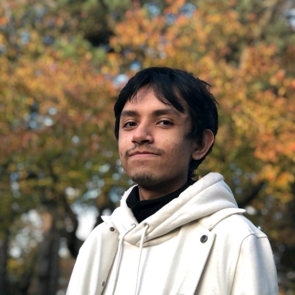

Nabhan Anwar
Hey there! Welcome to my Personal Portfolio.
About me
I am currently a third-year Computer Science Honours & Co-op student at the University of Guelph. I am an international student born and raised in Abu Dhabi, UAE with a Bangladeshi ethnicity. I am passionate about software development and creating fun things. I had my first co-op work term at the University of Guelph within CCS (Computing & Communications Services) as an Email and Collaboration Support Co-op. In my free time, I love to cook and crochet while wathcing TV shows. I've worked on couple of projects in my academic journey, which I've showcased in this portfolio. I am also passionate about human rights, I volunteer on campus to advocate and help those in need. Feel free to reach out or connect with me!